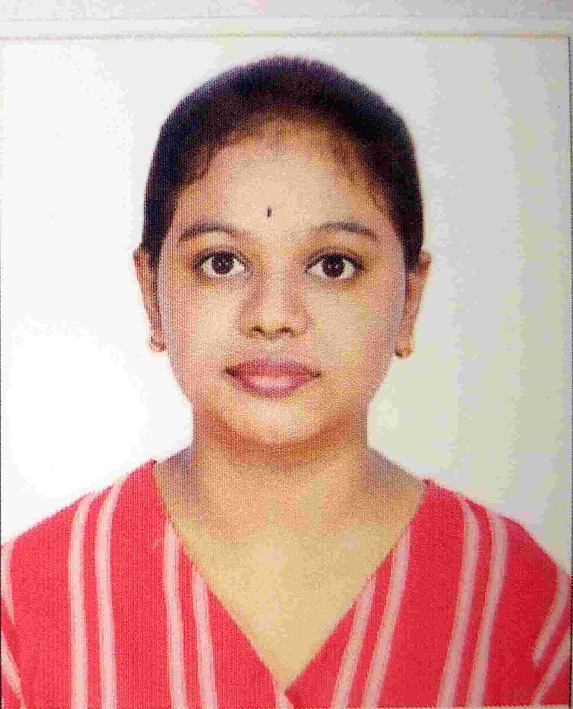

N BRUNDA
Bengaluru, Karnataka
Phone: +91 8217899814
Email: 1bi24cs133@bit-bangalore.edu.in
GitHub: https://github.com/nbrunda2006
LinkedIn: linkedin.com/in/n-brunda-968a38369
|

|
CAREER OBJECTIVE
Computer Science Engineering student with knowledge of Python, Java,
C, SQL and Data Structures. Interested in software development,
machine learning and web-based applications. Looking for internship
opportunities to apply technical knowledge, develop practical skills
and gain real-world experience.
EDUCATION
| Degree |
Institution |
Year |
CGPA / Percentage |
| B.E. Computer Science and Engineering |
Bangalore Institute of Technology |
2024 - 2026 |
9.09 |
| PUC / 12th |
Vidya Mandir Ind.Pre University College |
2024 |
94% |
| 10th |
Federal Public School |
2022 |
89% |
TECHNICAL SKILLS
|
Programming Languages
|
Python, Java, C
|
|
Database
|
SQL, DBMS
|
|
Core Concepts
|
Data Structures, Object-Oriented Programming
|
|
Web Technologies
|
HTML
|
|
Tools
|
Git, GitHub
|
PROJECTS
1. AI-Based Skin Disease Detection Using Machine Learning
-
Developing a web-based system that predicts selected skin diseases
from uploaded skin images.
-
Uses machine learning and transfer learning techniques for image
classification.
-
Implemented a MobileNetV2-based deep learning model using
TensorFlow and Keras.
-
The model is trained to classify images into seven categories:
Acne, Basal Cell Carcinoma, Chickenpox, Dyshidrotic Eczema,
Melanoma, Normal Skin and Ringworm.
-
The website provides the predicted condition along with general
information such as causes, prevention and when to consult a doctor.
-
Technologies:
Python, TensorFlow, Keras, Machine Learning, HTML
2. Farm Management System
-
Developed a database management system to maintain and manage
farm-related information efficiently.
-
Stores information about farmers, crops, farming activities,
resources and farm records.
-
Designed database tables and established relationships between
different entities using SQL.
-
Implemented SQL queries for adding, updating, retrieving and
managing farm information.
-
Technologies:
SQL, DBMS
3. Morse Code Communication System
-
Developed a Morse code communication system using Arduino Uno
and IR sensors.
-
Converts input signals into Morse code and provides output using
an LED.
-
Technologies:
Arduino Uno, C, IR Sensors, LED